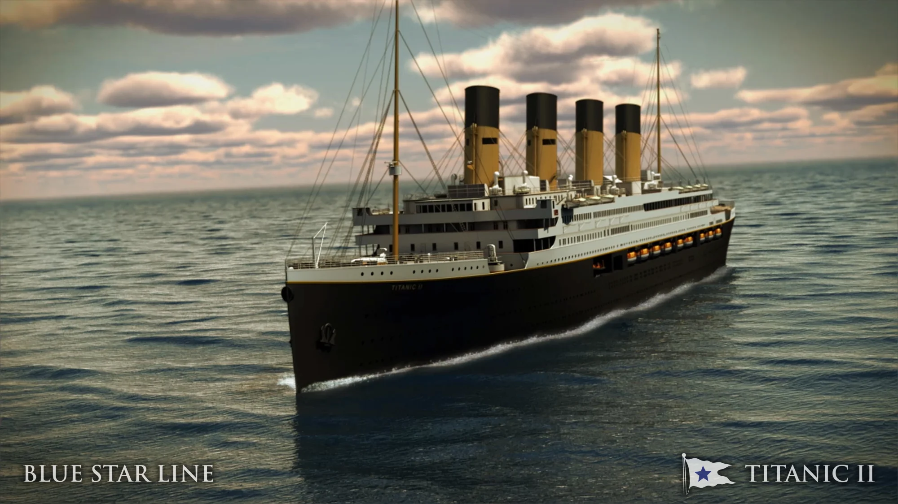
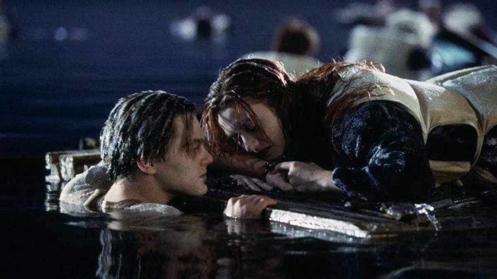

Un millonario construirá una réplica del Titanic: "Su seguridad será moderna; su tecnología, del siglo XXI
Así lo ha confirmado el magnate australiano Clive Palmer, quien ha indicado que este "será el barco del amor y o último en estilo y lujo". El 'nuevo' Titanic podrá transportar a unos 2.435 pasajeros en sus nueve niveles.
El excéntrico millonario australiano Clive Palmer anunció este miércoles un plan, el tercero en una década, para construir una réplica del Titanic, el mítico transatlántico británico que se hundió durante su viaje inaugural en 1912. El magnate minero, quien abrió en 2013 un enorme parque con réplicas de gigantesco dinosaurios animatrónicos en su propiedad del estado nororiental de Queensland, afirmó que si bien el Titanic II tendrá el mismo diseño interior y de cabina que el original, su sistema de seguridad será moderno y su tecnología del siglo XXI.
"Será el barco del amor y lo último en estilo y lujo", afirmó Palmer, según declaraciones recogidas por la televisión australiana Channel 9. La réplica del Titanic, que será gestionada por la empresa de cruceros Blue Star Line, pretende "ofrecer a los pasajeros un viaje en el tiempo sin parangón, sumergiéndoles de lleno en la opulencia y el esplendor de la vida a bordo del Titanic original", precisó.
El barco de 269 metros de eslora podrá transportar a unos 2.435 pasajeros en sus nueve niveles, que incluyen cabinas y comedores lujosos, piscinas, salón de baile y casino, entre otras comodidades. Anteriormente, Palmer intentó lanzar el proyecto del Titanic en los años 2012 y 2018, aunque en ambas ocasiones se paralizaron las iniciativas por problemas de financiación, mientras que el actual proyecto no cuenta con una fecha para el inicio de operaciones.

El transatlántico británico Titanic se hundió la noche del 14 de abril de 1912 durante su viaje inaugural hacia la ciudad de Nueva York al chocarse con un iceberg, causando la muerte de unas 1.500 personas.
¿Podrá esta vez el Titanic tener un resultado distinto?

¿Tenía Jack lugar en la tabla?
 Volver a inicio